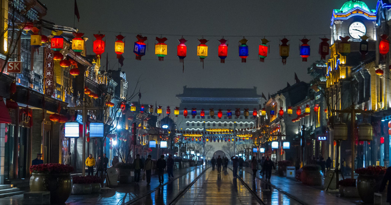
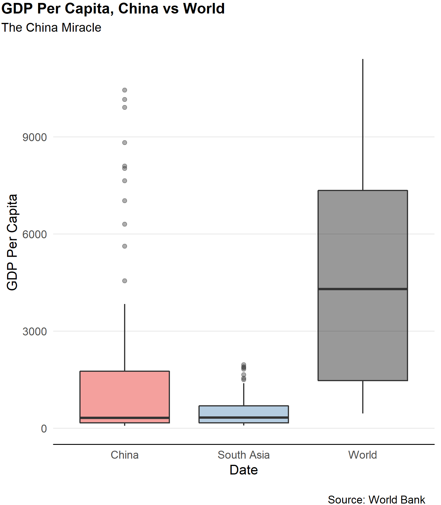

A research report on the role of protectionism in China's economic growth.
April 2022
China has carried out some key economic reforms starting in the 1970s. These economic reforms have resulted in a more liberalized economy and have helped China to become more integrated into the global trading regime. While China has
made great progress in terms of promoting free trade, protectionism has remained one of its core economic policies. This paper examines how protectionist policies have helped China economically and why China continues to use protectionism
as one of its central economic guidelines. Furthermore, the paper examines whether China’s claims of being an open economy, particularly for foreign investment, is based on reality or is a political rhetoric to position China favorably
vis-à-vis the US. The paper concludes that, while China has made real progress in terms of opening its economy, it continues to pursue protectionism as one of its core economic policies and is only shallowly integrated into the
world economy. Owing to the ongoing global trade disputes and the retreat of America from global economy, China seems to have found space to push its own global agenda and use ‘free trade’ as a way to garner support.
History of China’s economic reforms show that the country has come a long way from being an extremely poor country to being one of the most economically successful countries in the world. With the recent rise of nationalistic policies around the world, China has presented itself as a supporter and a protector of open markets and free trade. Since the 1970s, China has become more open and has pursued a liberal economic regime which has pushed the country to the forefront of economically prosperous nations. Over the last three decades, foreign direct investment has played a key role in Chinese local, as well as national, development. However, this unprecedented development was not entirely a result of trade liberalization. In fact, China has pursued protectionist policy measures for a long time. This striking balance between openness and protectionism has helped China to both develop domestic industries as well as attract foreign investment. This paper explores how protectionist policies have helped China economically and why China continues to use protectionism as one of its core economic guidelines. Furthermore, the paper examines whether China’s claims of being an open economy, particularly for foreign investment, is based on reality or whether it’s just political rhetoric to position China favorably vis-à-vis the US.
Empirical evidence shows that China, while being an activist state, has carried out major economic reforms in favor of an open economy. Therefore, it sounds contradictory to say that China is an open economy with protectionism been one of its core economic policies. However, it is true that, while China has liberalized its trade regime, it has also pursued protectionist policies and it continues to employ protectionism to promote its export industries and to protect its core national interests. This selective liberalization of economy or the mercantilist trade strategy means that China promotes exports more than imports. The protectionist policies serve to protect the interests of domestic players over foreign competitors. Foreign investors are encouraged but the foreign investment in China comes with many strings attached, one of the most controversial been the forced technology transfer. Many foreign services and products are banned in China. Some of the most notable services being those provided by Facebook, WhatsApp, Google, and YouTube. Currency manipulation is another measure that has attracted much criticism. Despite following a selective liberalisation model, China has achieved unprecedented economic growth. This means that protectionism has worked in favor of China and has played a critical role in the process of economic development. With the current trade war between China and the US, there is a revival in the debate concerning protectionism and free trade. While protectionism seems to be rising around the world, including the US, China has presented itself as the champion of free trade. Given the government’s heavy hand on private interests, China’s claim seems a bit far-fetched, and the West’s criticism of China doesn’t seem to have enough weight especially in the light of the domestic backlash against trade liberalization.
China has come a long way in terms of economic reforms over the last few decades. Since 1978, China has successfully carried out a number of economic reforms that have helped to transform its economy. Through successive economic reforms, China has transitioned away from being a command economy to a more market oriented one. The reforms came with a number of structural challenges to the socialist system, however, China was able to navigate through these challenges and avoid the pitfalls of the former socialist countries. Been aware of the unmet needs of the country and the shortfalls of a command economy, Chinese reformers gradually allowed their economy to open to the outside world. Adjusting the economy required abandoning some previous strategies adopted during the Great Leap Forward period which primarily focused on heavy industrial development.
China’s unprecedented development shows the importance of choosing the appropriate developmental strategy that focuses on the economy’s comparative advantage rather than trying to imitate a model that ignores the key sectors of a particular economy. China’s socialist revolution seems to have realized the failures of the previous strategies adopted in the wake of the establishment of the People’s Republic of China in 1949. Considering the immense challenges faced by the country, such as widespread poverty, the choice of developmental strategy was key to determining the success and failure of the Chinese economy. Before 1979, the Chinese political and social elites were lured by the dreams of achieving swift modernization. The lack of industrialization was considered as the main cause of country’s backwardness. Therefore, China started the ambitious Five-Year Plans to compete with the advanced economies of Britain and the United States. However, China did not have the necessary preconditions and the comparative advantages to compete with the advanced economies which more or less operated in an open and competitive market. To achieve its strategic goals, the state intervention was increased greatly. Priority industries were given protection and the growth was mainly driven by increase in inputs. The result was increases in economic inefficiencies and a further closing of economy. However, during the transition period, China adopted a dual-track approach which involved increasing productivity in the collective farms and state-owned firms, and the protection of priority sectors.
In 1978, China’s per capita income was US$154, lower than many Sub-Saharan African countries. The country was overwhelmed with poverty for centuries. It was also an inward-looking country with a trade dependence ratio of just 9.7%. That all has changed over the last three decades. By 2012, 600 million people had escaped poverty; GDP per capita had increased to $4,000; average annual growth in international trade had gone up to 16.6%; its trade dependence ratio had reached to about 50%. In 2009, China took over Japan to become the second largest economy in the world. These statistics are staggering considering where China started at the end of 1970s. The growth over the past three decades has demonstrated China’s capability to not only deal with domestic developmental issues, but also become a driver of world development and a stabilizing force in the contemporary global economy. These developments show that the Chinese reforms, mainly the transition from a command economy to a market-based economy, have worked really well for the country.
While China has come a long way to achieve its current status in the global economy, its earlier reforms started first in the countryside. The rural reforms relaxed government’s pressure on the farmers by reducing and stabilizing procurement targets. After the devastating failures of the Great Leap Forward, China’s leaders realized that the rural economy needs some measure restructuring and governmental support. The agriculture economy, along with other sectors, was given more autonomy in terms of decision-making. The result was a surge in agricultural production. The farmers were supported through higher prices and modern agricultural inputs such as fertilizers. Higher production meant higher income for the farmers who were then able to invest that money into rural non-farm economy. The increase in agricultural output also freed excess labor who were then employed by the township and village enterprises (TVEs). This initial push to develop the rural economies set the stage for later steps involving the development of other sectors of the economy.
The gradual, dual-track approach not only served to kick-start rural development, but it also provided necessary protections to unviable firms in the priority sectors, and simultaneously, liberalized the entry of private enterprises, joint ventures and foreign direct investment in labor-intensive sectors in which China had a comparative advantage but that were repressed before the transition. This strategy helped China to avoid the collapse of old-priority industries while focusing on tapping benefits from its comparative advantage. However, this strategy also meant that China had to maintain certain distortions, such as the control over financial services, in order to support unviable firms in the priority industry and in order to retain stability over the transition period. It also helped China to continue with its dynamic growth strategy.
China’s growth strategy has delivered some spectacular and lucrative economic gains. The process of China’s trade liberalisation after initial failures to reform its economy have worked well for the economic development. For example, since embarking on the journey to a more liberal economic regime, China’s foreign trade has increased to $475 billion in 2000 from just $20 billion in the late 1970s. Likewise, its foreign direct investment has increased to $300 billion in 2000 from $19 billion in 1990s. These figures show how much progress China had made over a mere two decades in terms of international trade and openness prior to joining the WTO in 2001. China’s accession to the WTO further reinforced the belief that China is committed to fostering and maintaining a multilateral trading system and play by the rules of a liberalized economic order. By 2001, the WTO commitments entailed a broader set of liberalization measures than those initially agreed by the member organizations. This meant that the commitments required from China exceeded those made by other WTO members who joined in 1995. While some hailed China’s WTO membership as a great success in integrating a fast growing economy into the global trading regime, others were more skeptical. For example, some simply saw it as a process that would integrate the socialist economies into the capitalist global economy rebuilt by the USA after World War II. Nevertheless, China’s accession to WTO was a recognition of the Chinese economy as a market-oriented one with the commitments to uphold the global trade rules. There is no denying that China has made great progress in terms of trade liberalisation and the prevailing view is that China was globalization’s greatest success story during the last quarter century.
The previous section has shown that China has achieved unprecedented economic growth since the late 1970s and has successfully moved away from a command economy to a more market-oriented one. This is further evident from the effects of external factors on China’s economy as demonstrated by its current trade war with the US. Furthermore, economic integration has led to diversification of interests and the emergence of non-state advocates of openness within China. Unlike in the past, there are more synergies between private businesses and the Party. The two complement each other in many ways. While the Party ensures a stable and predictable economy for the private enterprises to thrive, the private enterprises help to achieve the priorities set out by the Party.
China’s success has demonstrated its ability to take advantage of globalisation while shielding itself from the volatilities of the global economy. Instead of opening its economy all at once, gradually opening to liberal globalization helped China to build a strong industrial base by nurturing domestic capabilities. The gradual opening allowed China the maneuvering space to adjust and transform its economy when and where necessary. China was careful not to overwhelm its domestic markets with foreign competition which could have rendered some of the domestic markets as inefficient and unviable. Therefore, while foreign investment was encouraged, China used a number of policies to ensure that technology transfer would take place and strong domestic players would emerge.
China maintains that it is receptive of a liberal global economy and does not promote protectionist policies. The earlier protectionism is considered as essential to bringing China up to par with other advanced economies. At a time when protectionist policies are becoming a major impediment to global trade in many countries, China has presented itself as a champion of free trade. US, which fostered the multilateral trading regime by leading the efforts of WTO, seems to be less interested in promoting global trade and seems to be inclined towards protecting its own domestic firms. The loss of interest of the current US administration to support a multilateral trading system has given China space to prop up its own efforts to secure a leadership position in the global trading regime. China, therefore, is investing more in many developing economies by pursuing some of the most ambitious projects such as the Belt and Road Initiative. However, despite making significant progress in terms of achieving a liberal economic regime, many critics have maintained that China remains plagued with protectionism in a number of ways.
Firstly, China has long been accused of pursuing a mercantilist trade strategy whereby it promotes its exports more than imports. The export-led growth strategy has contributed to the building up of foreign exchange reserves in China which have increased to 44% of GDP (US $3.2 trillion) in 2011 (IMF 2011). While it is common for emerging economies to stockpile reserves as an insurance measure against economic downturns, it is argued that China’s reserves are too large to justify such precautionary motives. This has become one of the central issues in the US-China trade war. The current US administration has repeatedly stressed the fact that US imports $506 billion worth of goods from China, however, China only imports $130 billion worth of goods from the US (United States Census Bureau 2019). The US is looking to reduce this trade balance by putting pressure on China to relax some of its trade restrictions and import more from the US. It has been contended that the difference in trade balance gives US more negotiating power. However, there are also concerns about the costs to the American consumers resulting from higher tariffs on Chinese goods. Nevertheless, some authors, such as Michael Pillsbury, have maintained that mercantilism is a part of China’s ‘secret strategy’ to take its place on the world stage. The author asserts that, through high tariff barriers, China has been able to strengthen its industries and promote an export-oriented strategy at the expense of the US. It is further argued that US supported China’s development for decades in hopes of promoting democracy and a liberal trade regime.
Secondly, China is accused of currency manipulation in attempts to shield domestic firms from foreign competition. It is also considered a breach of the WTO commitment to end price controls. Unlike in a free market where the value of the currency is allowed to rise and fall, the value of the Chinese currency, renminbi, is determined by the People’s Bank of China. The Bank is directly controlled by the Party. While China has made some efforts to make the currency more reflective of market forces, it is still strictly under the government’s control. This means that China can artificially keep its currency undervalued to make its exports cheaper. As a part of its mercantilist strategy, some critics have pointed out that, the undervalued currency helps to make China’s exports more competitive and allows the Chinese government to hoard foreign reserves. The currency manipulation is believed to promote China’s overall trade policy and is tantamount to a form of mercantilism—intensive government intercession in support of maintaining a trade surplus—using a cheapened currency, which achieves an attractive price for export goods while keeping prices high for imports. The fixed exchange rate strategy is also used as a capital controls measure to limit financial inflows that could lead to high inflation. The current US-China trade war has further escalated the debate surrounding currency manipulation and there is more pressure on China now to shift to a flexible exchange rate regime. However, for now, China continues to use its currency to shield itself against tariffs. For example, in response to US tariffs on Chinese goods in 2018, China allowed its currency to decline by 7.6% against dollar in just four months. This strategy helped China to offset some of the adverse effects of tariffs by making Chinese exports cheaper.
China has been consistently accused of stealing intellectual property by forcing foreign companies to form joint ventures. The US, particularly, has maintained that China is running a state-backed campaign to steal technology and intellectual property. An investigation by the WTO is underway to determine whether the US accusations are based on reality. In return for market access, China is believed to pressure foreign companies to share technology with the domestic firms. Violations include making unauthorized copies of renowned brands and theft of trade secrets. A number of counterfeit products are believed to have been sold in China as well as abroad. China has a huge advantage in terms of the domestic market size. In order for foreign firms to gain access to this vast market, they are asked to hand over the trade secrets which are then transferred to local firms. The lack of protection of intellectual property means that foreign firms are wary of doing business in China and are less willing to invest in innovation. The forced intellectual property transfer takes away the incentives for foreign companies to invest in research and development. In 2018, owing to the increased pressure resulting from the trade conflict with the US, China announced punishments for intellectual property theft. China has consistently denied the accusations that any such forced transfers happened in the past and has pledged to crack down on any such transfers in the future.
Another key concern is China’s ambition to become a technology hub by investing in artificial intelligence and robotics. As a part of its ‘Made in China 2025’ initiative, China has propped up its efforts to invest in new technology and expand its influence around the world. A 2018 report by experts from the Tel Aviv University and the U.S Naval War College found that China Telecom, a state-owned telecommunication company, may be involved in a campaign to hijack internet traffic and direct it through Mainland Chinese servers for possible collection and analysis. Another report by U.S. Trade Representative Robert Lighthizer’s office has concluded that “China fundamentally has not altered its acts, policies, and practices related to technology transfer, intellectual property, and innovation, and indeed appears to have taken further unreasonable actions in recent months.” The report further points out that China’s cyber-enabled theft has become more frequent and sophisticated over time. State-sponsored hackers are believed to be working to obtain valuable trade secrets that could support China’s industrial policy. Surprisingly, however, tech transfer in joint venture does not seem to bother many US companies doing business in China. A survey of hundreds of China-based US companies found that “only 16% said that reducing the need to share technology know-how with joint-venture partners impacted their investment decisions.”
Related to the issues concerning, intellectual theft, China is accused of erecting barriers to the entry of tech companies, particularly those from the US. Several popular American tech companies such as Facebook, Google, and YouTube are banned in China. This unprecedented digital censorship has shielded China’s tech giants, such as Alibaba, from global competitors. Domestic tech companies have a near monopoly over a market of over 1.4 billion people. These companies enjoy a close relationship with the Chinese government and have enjoyed great benefits from protectionist measures. While the tech companies have greatly expanded their reach in the domestic markets, they have found little luck globally. However, they are looking to expand to other countries by investing in technology projects in India, Southeast Asia, Africa, and Latin America. As long as these companies enjoy government protection and unrestricted access to Chinese market, they can continue to make huge profits which can then be used to expand into other countries. The Chinese state provides special incentives and subsidies to foster the growth of high-tech companies.
The protectionist measures that serve to shield the Chinese tech companies are particularly problematic for the US which is a services-based economy. According to the World Bank data, the services sector in the US accounted for 76.6% of the GDP in 2016. Tech companies, along with finance and insurance, play a significant role in the US economic growth. China, on the other hand, is an industrial economy that mostly exports manufactured products. Since most of the US technology giants such as Google are censored in China, US is unable to benefit from Chinese market. US only exports a small amount of manufactured goods to China while China exports a large amount of manufactured goods which are allowed in the US. The difference means that US is unable to fully benefit from its comparative advantage while China enjoys largely unrestricted access to US markets.
The current US-China trade war has exposed some of the shortfalls of the current multilateral trading system under the WTO. When the trade dispute began back in 2018, the US administration circumvented the WTO to impose tariffs on steel and aluminum imports. These days, WTO seems to be a bystander as countries continue to push protectionist policies. The US, particularly, seems to have taken a protectionist turn as well. The last two years have seen a serious backlash against globalisation. As the Economist pointed out, the global value of cross-border investment by multinational companies sank by about 20% in 2018. The trade war not only has threatened the trade relations between the US and China, it also has impacted other major economies, especially as the current US administration continues to impose tariffs on both rivals and allies. The tariffs have provoked retaliation, which in turn has disrupted global commerce. In efforts to bring factory production back to US, the American administration has imposed heavy duties on its trading partners which are then forced to hit back with their own duties and counter tariffs. Such retaliatory behavior has threatened the multilateral trading system, especially as the regional and bilateral trade agreements continue to proliferate the global economy. US seems to have lost the credibility to protect and foster the multilateral trading regime under the guidance of the WTO. In fact, the WTO is under constant pressure to reform. In such a volatile and uncertain situation, many countries are now looking for new leadership, and China seems to be the most obvious choice. In response to faltering globalization and free trade, Chinese leader President Xi once said, “some people blame economic globalization for the chaos in our world. One should not retreat to the harbor when encountering a storm, for this will never get us to the other shore of the ocean.”
While there is continuous criticism of Chinese protectionist policies, it is important to consider that protectionism has become a global issue. China has come a long way to take center stage in the global economy. Today, there is no doubt that China is presenting itself as an alternative to the US and as a champion of free trade. China has not integrated itself into an ‘American-dominated order’ as the US might have hoped. There is certainly a political side to the whole ‘free trade’ rhetoric pushed by China which sees a rare opportunity to push forward its own global agenda. For a long time, the US has refused to back off from the global leadership position, but the current US administration seems to be favoring a more nationalistic approach which has led to numerous grievances by its trading allies such as Canada.
In many ways, China has become deeply embedded into the international system and has attained the power to influence advanced economies. There is no doubt that China has made great progress in terms of opening its economy and attracting foreign investment. In many ways, China has shown real commitment to further improve trade liberalization and foster the multilateral trading system. However, while the Chinese leaders have called for the promotion of free trade, protectionism continues to be a key component of the country’s economic policy as demonstrated by issues related to mercantilism, currency manipulation, forced transfer of intellectual property, and entry barriers to tech companies. Like some advanced economies, protectionist measures played a more critical role during the early days of development. While protectionism remains a key issue in China, it is also important to note the current rising trend of protectionist policies around the world, including the US. In a volatile and fragile multilateral trading system, there is no doubt that China is presenting itself as an alternative to the US. However, the Chinese enthusiasm towards free trade seems to be politically motivated, especially as the US grows increasingly critical of the global trading system. In certain respects, China remains only shallowly integrated into the world economy.
BlogChina's ambitions in global politics and economics threaten to destabilizie the balance of power.